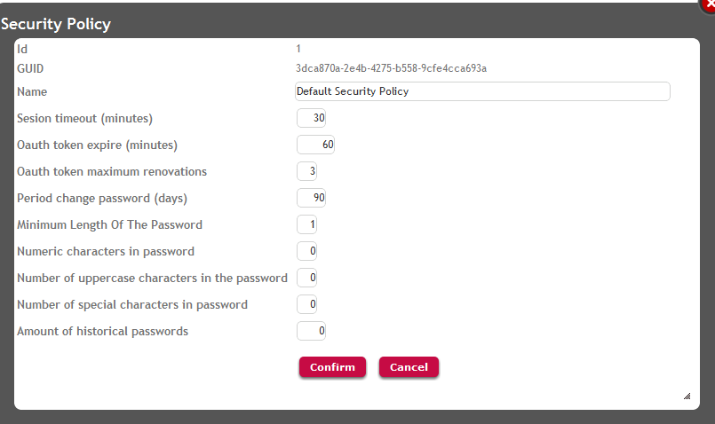
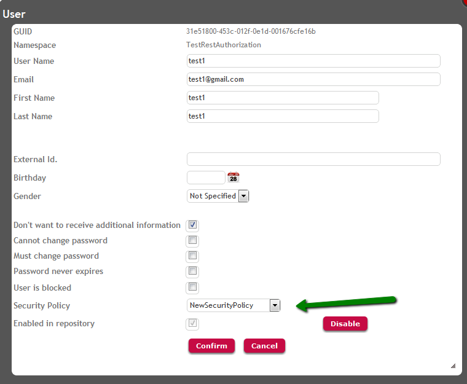
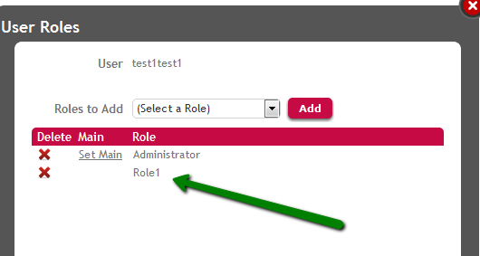
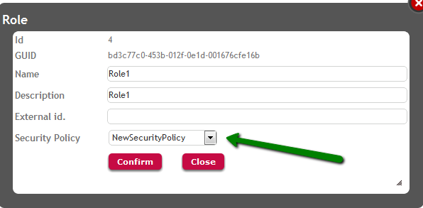

The following are some of the properties grouped by GeneXus Access Manager Security Policies (GAMSecurityPolicy GAM object):
A GAM User can be assigned a security policy, as well as roles can be assigned a security policy also. Besides, a default security policy can be set for the GAM Repository.
The GAM security policies can be defined using GAM Web Backoffice, or programmatically using the GAM API. Using Web Backoffice the interface to add or update a security policy looks like the following figure:

The decision on which security policy will be assigned to a user in runtime depends on the following precedence:
Each GAM user can have one security policy associated to him, or none.
Using GAM Web Backoffice go to WW Users, and edit the user properties (as shown in figure 2) to change his security policy.

Programmatically, you can get the security policy of the user with SecurityPolicyId property of GAMUser object.
&User.Load(&UserId) //&User is GAMUser object, &UserId is GAMGUID data type &SecurityPolicyId = &User.SecurityPolicyId //&SecurityPolicyId is GAMKeyNumShort data type.
If the user has no security policy, the policy taken in runtime will be the one associated to his Main Role. See GAM: Main Role of a user for more information.
By editing the user properties in WW Users, you can see his main role (it's the only one which has no possibility to be set as Main Role).

By editing the role's properties, you can see the security policy of the role (which can be "none").

You can get the security policy of the role with SecurityPolicyId property of GAMRole object.
&Role.Load(&Id)//&Role is GAMRole, &Id is GAMKeyNumLong &SecPolId = &Role.SecurityPolicyId //&SecPolId is GAMKeyNumShort data type
If the user has no security policy assigned, neither a main role, the security policy taken is the Default Security Policy of the Repository.
The property DefaultSecurityPolicyId of GAMRepository object tells the default security policy of the repository.
&Repository.Load(&Id) //&Repository is GAMRepository, &Id is GAMKeyNumLong data type &DefaultSecurityPolicyId = &Repository.DefaultSecurityPolicyId //&DefaultSecurityPolicyId is GAMKeyNumShort data type
&UserPassword.Matches(!"[^\d\w]")
Which means:
\w [a-zA-Z0-9_] (literal or digit or underscore)
\d [0-9] (digit)
^ not
So the regular expression means all that is NOT \d\w
GAM - Roles
GAM - Permissions
Security Session Management in Applications using GAM